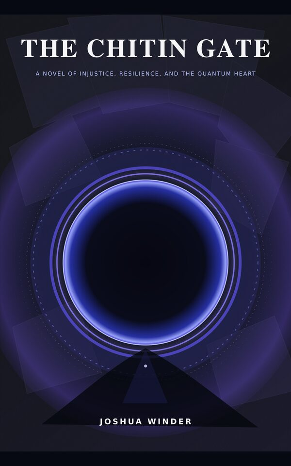
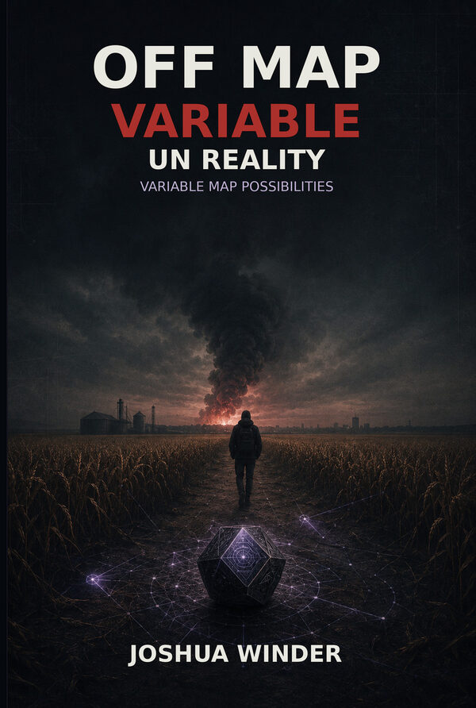
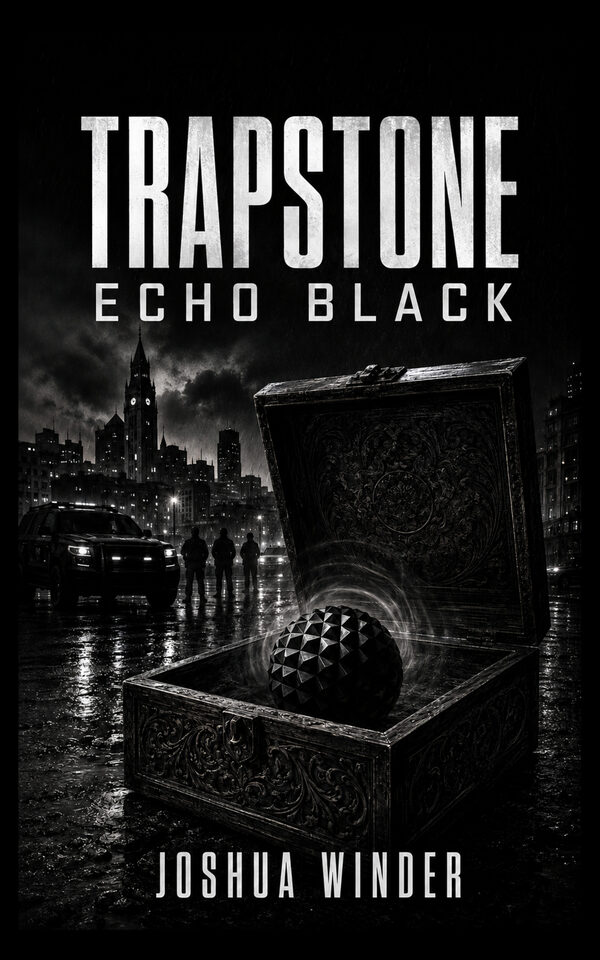
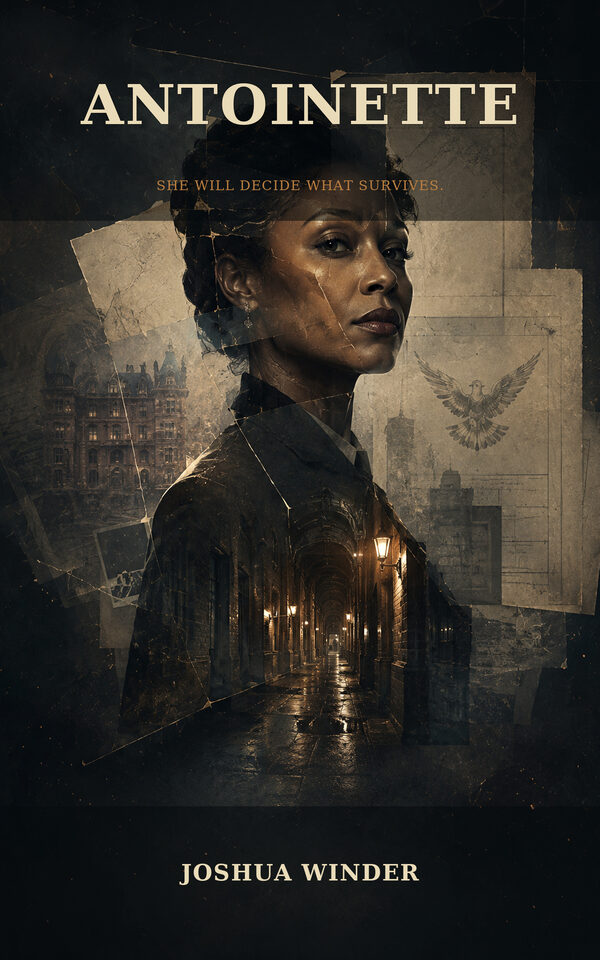
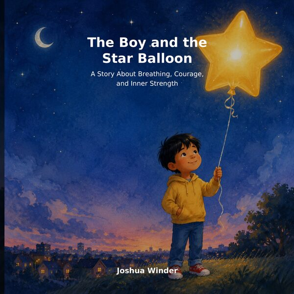
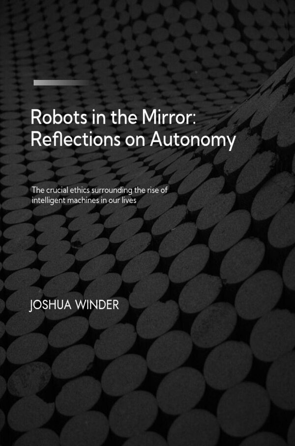
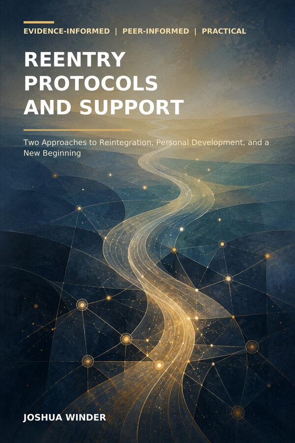
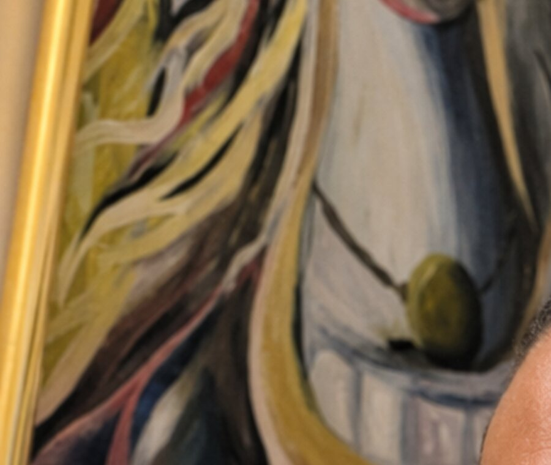

Science Fiction
The Chitin Gate
A philosophical novel of injustice, resilience, hidden systems, and the quantum heart.
View on Amazon ↗Stories. Music. Art. Ideas.
Nuthin But Worlds is the creative home of Joshua Winder, bringing together original fiction, music, visual art, and ideas built to grow beyond the page.
The Vision
This is a living creative universe. Books, songs, artwork, technology, and future projects all meet here under one name.
Books
Fiction, children's stories, social reflection, and practical guidance from the NuthinBut Worlds catalog.

A philosophical novel of injustice, resilience, hidden systems, and the quantum heart.
View on Amazon ↗A courier uncovers engineered evidence capable of pushing the world toward war.
View on Amazon ↗
A separate companion work exploring variable maps, hidden routes, and possible realities.
View on Amazon ↗
A mysterious artifact bends probability and exposes the architecture beneath ordinary life.
View on Amazon ↗
A survivor confronts powerful systems, buried histories, and the cost of exposing the truth.
View on Amazon ↗A young player learns that one missed play does not define his courage, growth, or next decision.
View on Amazon ↗
A gentle story about breathing, emotional regulation, perseverance, kindness, and confidence.
View on Amazon ↗
Reflections on autonomy, artificial intelligence, responsibility, dignity, and human choice.
View on Amazon ↗A Bridgeport-centered story about redevelopment, power, community, and who benefits from progress.
View on Amazon ↗
Evidence-informed and peer-informed guidance for reintegration, personal development, and new beginnings.
Publication package in preparationMusic
Original songs, spoken word, experimental releases, and music connected to the worlds being created.
Experience the new blue-and-orange visualizer for one of NuthinBut’s most-played releases.
Watch on YouTube ↗ NuthinBut E B HWatch and listen to music, visual releases, and creative-world content.
Open YouTube ↗ Featured Listening LinkEnter the NuthinBut sound through a verified song from the music catalog.
Play on Suno ↗Art
Explore Joshua Winder's visual art, prints, products, and digital collectibles.

See Joshua’s expressive original artwork across wall art and creative products.
View on Pixels ↗Explore layered color, texture, rhythm, and the broader visual-art collection.
View Fine Art ↗Enter the digital side of the NuthinBut collection and its creative experiments.
View on OpenSea ↗Video
Music visuals, creative experiments, book-related content, and new NuthinBut releases come together on the NuthinBut E B H channel.
Shop & Wearables
Wearable art, printed products, wall pieces, and digital editions from the NuthinBut creative ecosystem.
Shop NuthinBut artwork translated into clothing and wearable design.
Shop Wearables ↗ Art ProductsFind prints, home goods, and products featuring original artwork.
Shop Products ↗ Wall ArtChoose museum-quality print and display formats for selected works.
Shop Fine Art ↗ Digital EditionsExplore digital collectible editions from the NuthinBut catalog.
Explore Digital Art ↗About
Joshua Winder is a writer, artist, music creator, and idea builder based in Bridgeport, Connecticut. Nuthin But Worlds brings his creative projects together in one place and gives each new idea room to become something larger.
Stay Connected
New books, music, artwork, and creative projects will be added as they are released.
Contact Joshua